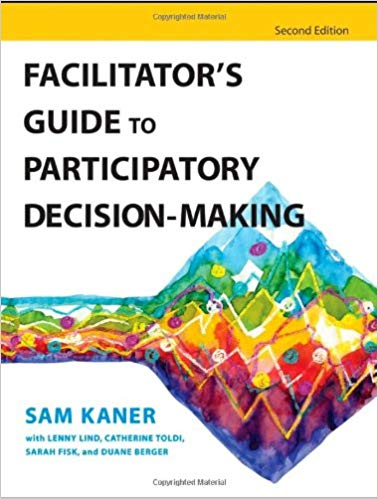
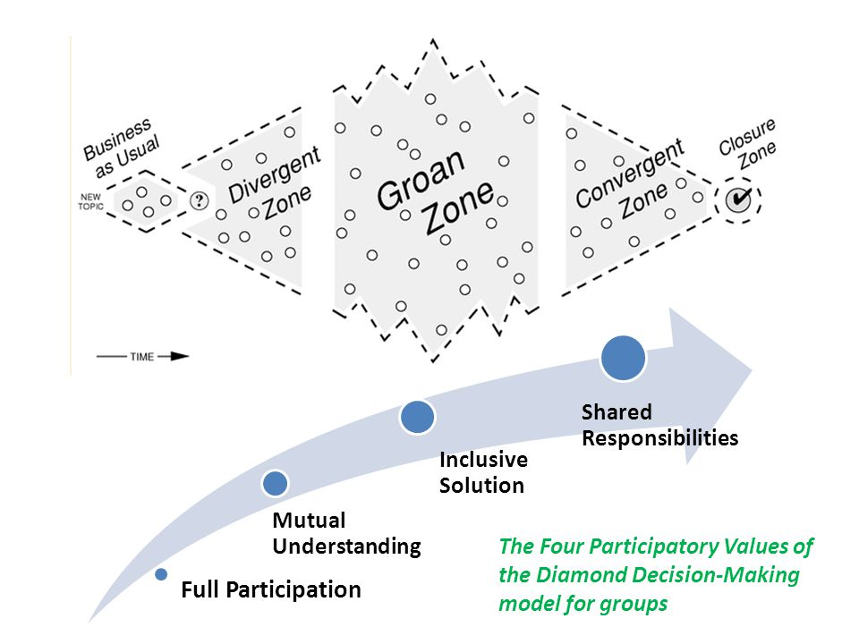

How to facilitate group decision-making
Aldric Giacomoni
Created: 2019-07-17 Wed 10:59
TLDS: read this book

Outline
- Framework for group decision-making
- Example: a retrospective
- Role of facilitator
A framework for thinking about group decision-making
- values to uphold
- types of conversations
The framework

Groan zone™
A time to align and to allow group-based ideas to emerge
Each step takes as long as it needs to
Trying to shorten or skip a step can lead to trouble
Participatory means anyone can call for closure, must get group agreement to move forward.
You can make steps more effective by choosing the appropriate exercise
A familiar example: a retrospective
- Event generation
- Finding themes
- Choosing topic
- Exploring conditions
- Making decision(s)
Event generation
- divergent
- usual exercise: individual writing
Finding themes
- convergent
- usual exercise: affinity mapping
Choosing topic
- convergent
- usual exercise: dot-voting
Exploring conditions
- emergent
- usual exercise: mind-map
Making decisions
- convergent
- usual exercise: action item generation
The role of facilitator
Help the group get to its goal
Get a Facilitator's hat
It doesn't have to be a hat.
You are not a part of the conversation.
You're here to hold space
Holding space means to be with someone without judgment. To donate your ears and heart without wanting anything back. To practice empathy and compassion.
Okay but concretely?
- Manage the tensions of the conversations
- Be cognizant of the time
- Give only as much information as you need to
- Allow everyone to be involved
- Be ready for emotions to surface
- Allow the team to come to its own decisions
conclusion
read the book - Ι have a copy
Outline
- Framework for group decision-making
- Example: a retrospective
- Role of facilitator
Q&A Time

kkthxbai
Happy to facilitate conversations!
Happy to teach / mentor on how to facilitate conversations!
Send flames to /dev/null